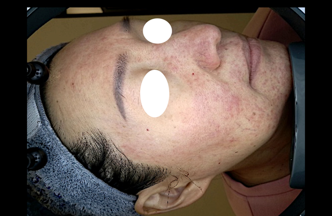
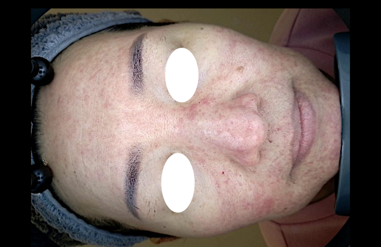
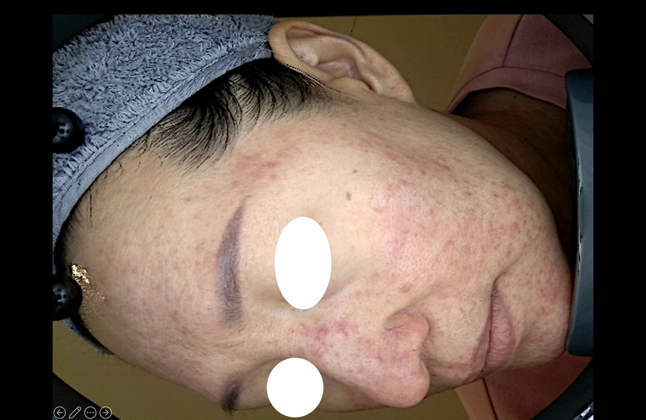
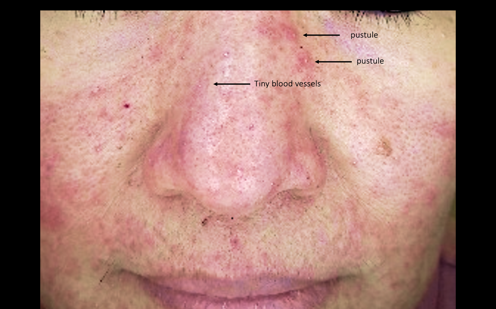

This is a sample report. Patient details have been anonymised. This report is for illustrative purposes only and does not constitute medical advice.
SAMPLE
Skin Assessment Report
Patient Information
Anonymous
54
Female
Chinese
Itch Score
5 /10
Pain Score
2 /10
Sleep Disturbance
0 /10
Chief Complaint
Red, itchy, dry rash.
Clinical History
In 2022, the patient underwent blood tests for skin sensitivity and was diagnosed with Systemic Lupus Erythematosus (SLE). Topical creams were prescribed to relieve itch and inflammation, and the patient also purchased health supplements online to support immune function. More recently, a separate specialist assessment concluded there was no confirmed SLE diagnosis — the presentation was attributed to ordinary contact dermatitis. The patient is currently not on any medication.
Photo Documentation




Clinical photographs have been obscured to protect patient confidentiality.
Final Diagnosis
Leading Diagnosis
Rosacea
Papulopustular Subtype
Why Rosacea Is the Leading Diagnosis
1Clinical Appearance
Numerous monomorphic erythematous macules and small papules over the cheeks, nose, and chin.
Absence of comedones or nodules, making acne vulgaris less likely.
No adherent scale, sharply demarcated plaques, or yellow greasy flakes to suggest psoriasis or seborrhoeic dermatitis.
2Distribution & Pattern
Symmetrical, centrofacial involvement, predominantly on convex surfaces, with sparing of concave areas (nasolabial folds, periorbital sulci).
This is a classic rosacea / photo-distribution pattern — the opposite of seborrhoeic dermatitis.
3Supporting Features to Confirm
Prominent telangiectasia on close-up inspection or dermoscopy.
Flushing triggered by heat, sun exposure, alcohol, spicy food, or emotional stress.
Ocular symptoms such as dryness or a gritty/sandy sensation.
Key Differentials to Consider
Acneiform Drug Eruption
Particularly from topical steroids or systemic medications. All oral and topical agents (including skincare and creams) should be reviewed.
Lupus Erythematosus
Should be considered if true photosensitivity or systemic symptoms are present — joint pain, mouth ulcers, or significant hair loss.
Seborrhoeic Dermatitis
Less likely given the absence of scale and non-classical distribution for this condition.
Contact Dermatitis
Typically more itchy and patchy, with sharper contact-zone borders. Common sites include the hairline/forehead (hair products), peri-oral or peri-ocular areas (cosmetics), and mask/spectacle contact points.
Further Questions for the Patient
Degree of itch specifically before sleeping — score from 0 (none) to 10 (unbearable).
Does facial flushing or redness occur in response to heat, sun, alcohol, spicy foods, or emotional stress?
Any ocular symptoms — particularly dryness or a gritty / sandy sensation in the eyes?
Management Approach
If rosacea is confirmed — please discuss all treatment options with your treating physician.
Avoid Triggers
Heat and UV exposure
Alcohol and spicy foods
Emotional stress
Skincare
Use gentle, non-irritating cleansers
Apply a simple, fragrance-free moisturiser
Minimise friction and exfoliation
Topical Treatment Options
Metronidazole
Ivermectin
Azelaic acid
Systemic Treatment Options
Doxycycline or similar agents for persistent or more symptomatic cases
⚠ Seek further evaluation if red-flag features appear: rapid progression, systemic symptoms, or severe ocular involvement.
Further Reading
For more information on rosacea, including triggers, subtypes, and treatment options: